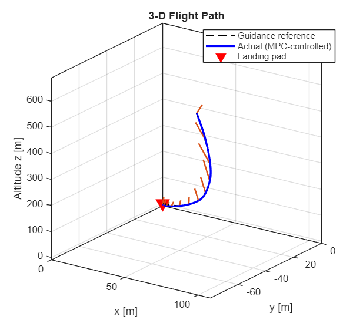

Liquid Propelled Rocket Lander Control Algorithm
To support GNC programs at Rose Propulsion Laboratory and enable controller co-design, I'm developing control algorithms to evaluate combinations of different linearization techniques and control strategies in application for our liquid propelled rocket lander. Controls strategies under test include model predictive control, lookup table control, and more exciting (for me), Machine Learning Control. Linearization techniques under test include standard Jacobian, numerical, and gain scheduling.
